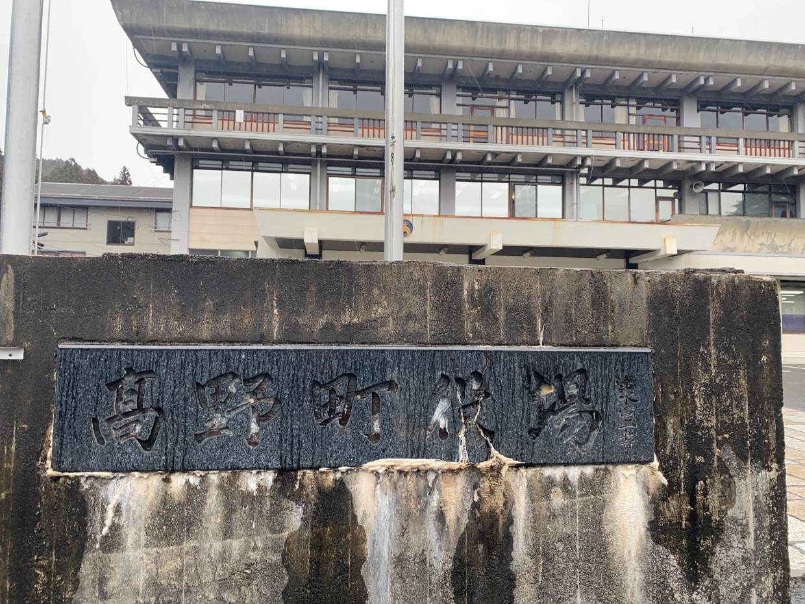
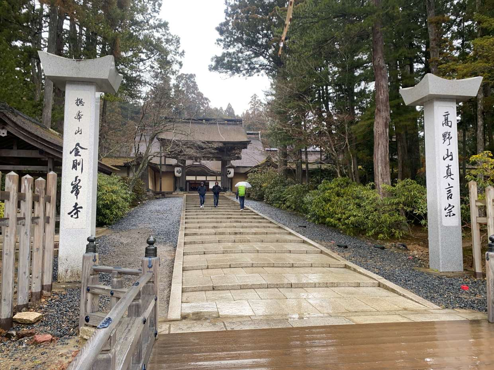

和歌山県高野町
役場

金剛峯寺

高野山にある高野町はお寺が多く仏教都市であることが良くわかります。雨だったため観光客はほぼいませんでした。車で行くと予想より山道が長いですが、途中で雲海が見えました。街並みはとても良いです。


高野山にある高野町はお寺が多く仏教都市であることが良くわかります。雨だったため観光客はほぼいませんでした。車で行くと予想より山道が長いですが、途中で雲海が見えました。街並みはとても良いです。